crafts.
home
produtos
tutoriais
contato
@insta
produtos
crochês
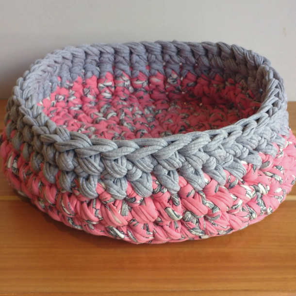
cachepô de fio de malha estampado
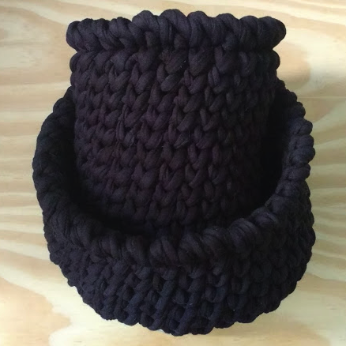
porta-trecos de fio de malha
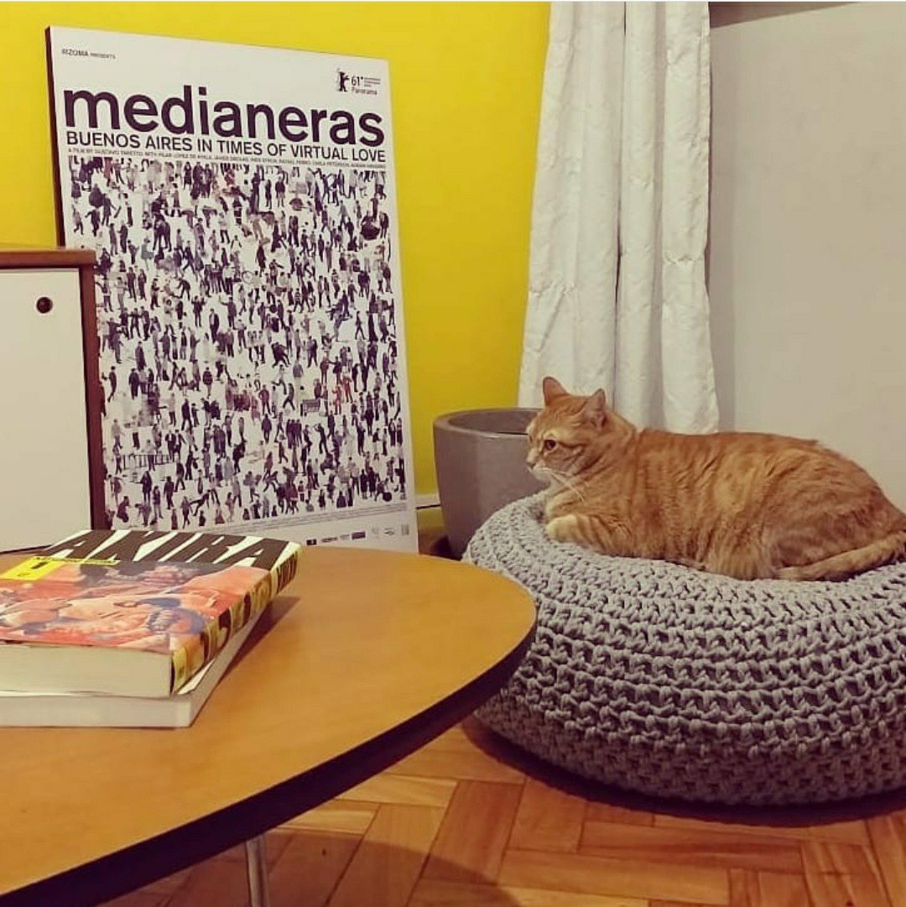
pufe de barbante grosso
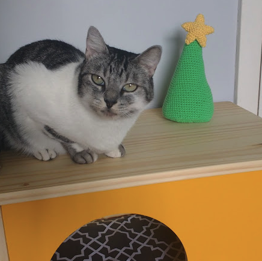
árvore de natal em amigurumi
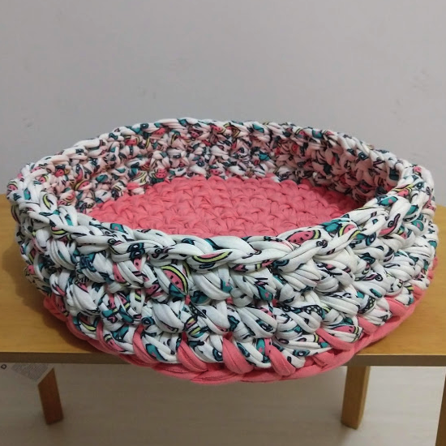
cama de pet de fio de malha
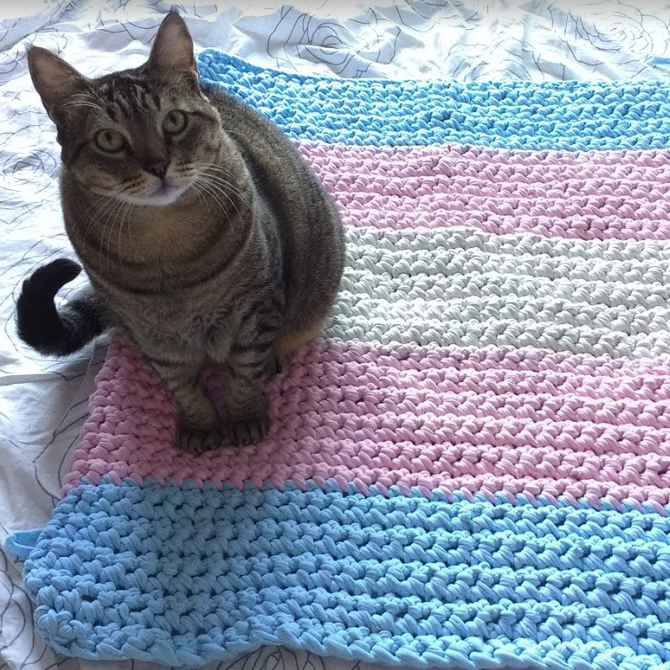
manta de fio de malha
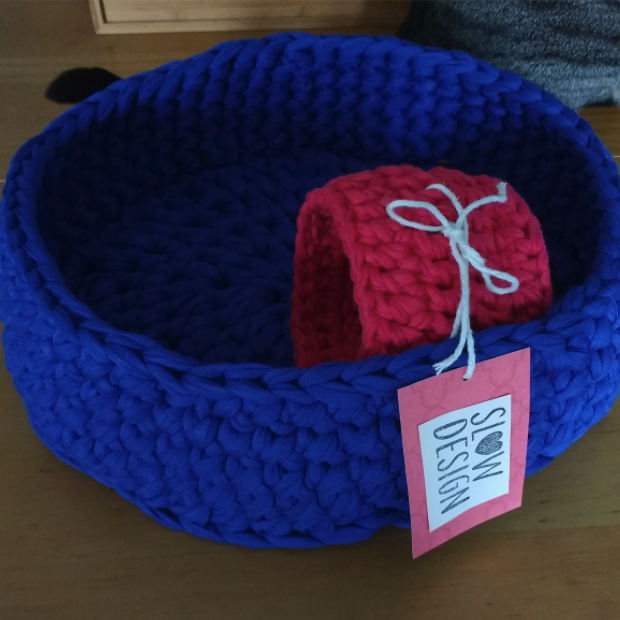
cachepô de fio de malha liso
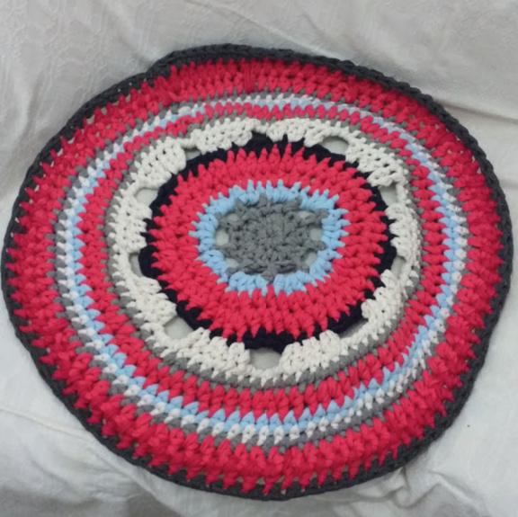
tapete de fio de malha com várias cores
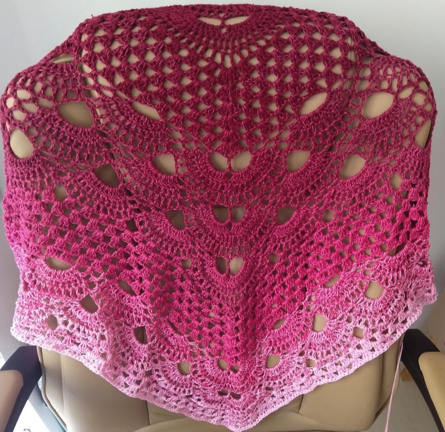
xale em degradê
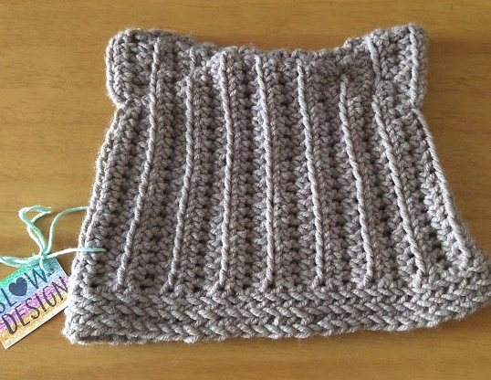
touca de lã com orelhas de gatinho
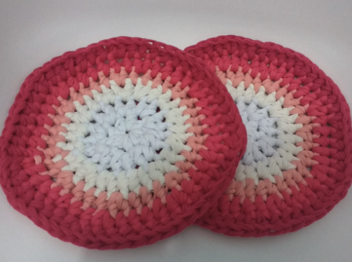
porta-copos em fio de malha com degradê
tricôs
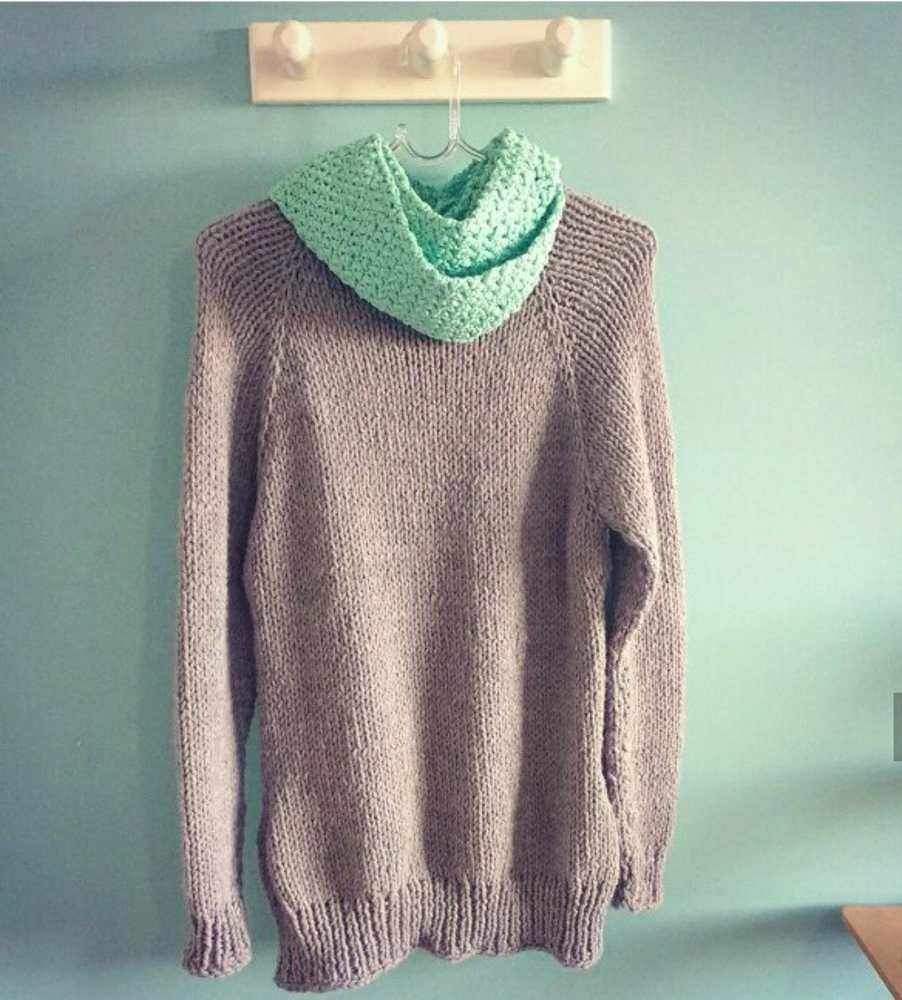
blusa de lã de manga longa
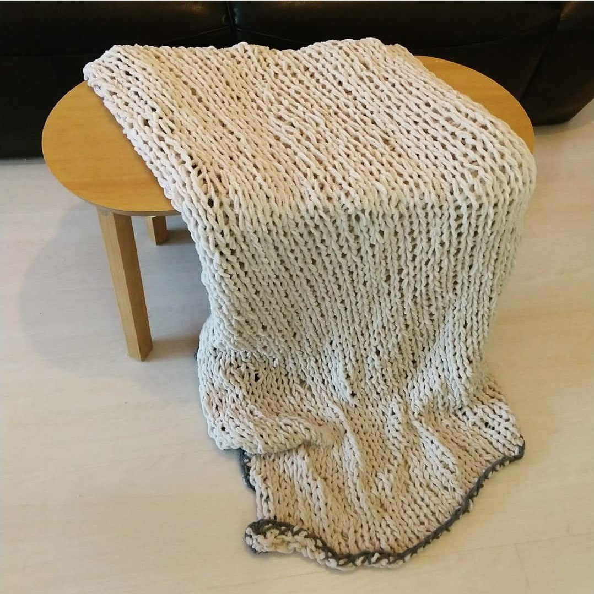
manta de lã bege